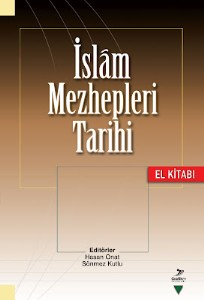
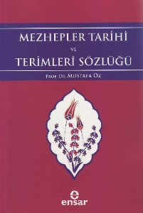
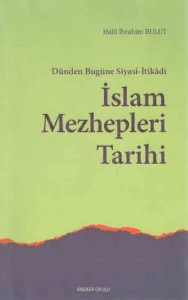
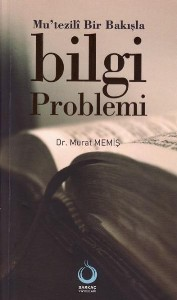
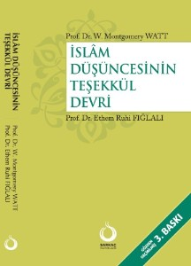
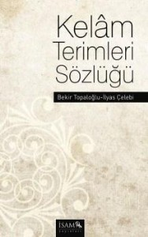
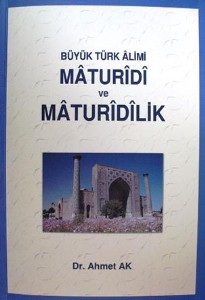
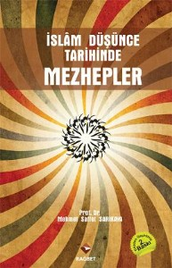

Yeni Kitaplar
Alanımızda yeni yayımlanan kitapların haberleri.
16 kayıt
Fevzi Rençber'in Yeni Çıkan Kitabı
Şırnak Üniversitesi İlahiyat Fakültesi İslam Mezhepleri Tarihi Öğretim Üyesi Yrd.Doç.Dr. Fevzi Rençber'in doktora çalışması Hak Muhammed Ali Aşkı -Adıyaman Aleviliği- adıyla Gece Kitaplığı'ndan çıkmıştır. Fevzi kardeşimi tebrik ediyor, daha nice çalışmalara im

İslam Mezhepleri Tarihi El Kitabı
İslam Mezhepleri Tarihi El Kitabı Grafiker Yayınları'ndan çıktı! (Ankara 2012, 612 sayfa) Editörlüğünü Ankara Üniversitesi İlahiyat Fakültesinden Prof. Dr. Hasan ONAT ve Prof. Dr. Sönmez KUTLU'nun yaptığı kitabın bölüm yazarları şöyle: Hasan Onat Sönmez Kutlu

Mezhepler Tarihi ve Terimleri Sözlüğü
Prof. Dr. Mustafa ÖZ tarafından hazırlanan Mezhepler Tarihi ve Terimleri Sözlüğü isimli eser Ensar Neşriyattan çıktı. İstanbul 2012, 660 sayfa. Mezhepleri ve alt gruplarını madde başı olarak alan sözlükte mezheplerin uzunca tanıtılıyor olması önemli bir bilgi

Mezhepler Tarihi Sözlüğü
Dr. Cevad MEŞKÜR'un Mezhepler Tarihi Sözlüğü isimli eseri Doç. Dr. Mehmet Mahfuz SÖYLEMEZ, Dr. Mehmet ÜMİT ve Dr. Cemil HAKYEMEZ tarafından Türkçe'ye çevirilerek Ankaro Okulu yayınları arasında yayımlandı. Ankara 2011, 606 sayfa. Her bir mezhep ve alt grupları

Bulut: İslam Mezhepleri Tarihi
Prof. Dr. Halil İbrahim BULUT, (Dünden Bugüne Siyasi-İtikâdi) İSLAM MEZHEPLERİ TARİHİ, Ankara Okulu Yayınları, Ankara–2011, 493 s. İslam coğrafyasında dini, sosyal ve siyasi faktörlerin etkisiyle birçok mezhep veya fırka ortaya çıkmıştır. Tarihi süreç içerisin
Yeni Kitap: TÜRKLER VE İSLÂM TASAVVURU
Ankara Üniversitesi İlahiyat Fakültesi'nden Prof. Dr. Sönmez KUTLU'nun "TÜRKLER VE İSLÂM TASAVVURU" adlı kitabı İsam Yayınları'ndan çıktı. Hocamızı tebrik ediyor, çalışmalarının devamını diliyoruz. Haber: İsmail AKKOYUNLU
Hanifi Şaihin'in kitabı
Hanifi Şahin'in "İlhanlılar Döneminde Şiilik" ötüken yayınlarından çıktı 1974’te Erzurum’da doğdu. ilköğrenimini Tortum’da (1985), hafızlığını İstanbul’da tamamladı (1987). Altı yıl süreyle klasik medrese öğrenimini gördü (1988-1994). 1992-1994 yılları arasınd

Yeni Kitap: Mutezili Bir Bakışla Bilgi Problemi
Dokuz Eylül Üniversitesi İlahiyat Fakültesinden Dr. Murat MEMİŞ'in Mu'tezilî Bir Bakışla Bilgi Problemi isimli kitabı Sarkaç Yayınlarından çıktı. (Ankara 2011, 272 sayfa) Kitap yazarın 2007 yılında tamamlamış bulunduğu Kadı Abdülcebbar'da Bilgi Problemi başlık

Yeni Baskı: İslam Düşüncesinin Teşekkül Devri
Prof. Dr. W. Montgomery WATT'tan Prof. Dr. Ethem Ruhi FIĞLALI hocamızın çevirisi olan İSLAM DÜŞÜNCESİNİN TEŞEKKÜL DEVRİ isimli eserin, yeni tercüme edercesine gözden geçirilmiş üçüncü baskısı Sarkaç Yayınları arasında çıktı. (Kasım 2010, xxvııı+452 sayfa). Hoc

Kelam Terimleri Sözlüğü, Bekir Topaloğlu; İ.Çe
Prof. Dr. Bekir TOPALOĞLU ve Prof. Dr. İlyas ÇELEBİ tarafından hazırlanan; Kelâm Terimleri Sözlüğü, İSAM Yayınları arasında çıktı. (İstanbul, 2010, 352 s.) Sözlük maddeleri Kelâm alanına girdiği kabul edilen veya başka ilim ve disiplinlere ait olmakla birlikte

Ahmet Ak, Maturidi ve Maturidilik
Kahramanmaraş Sütçüimam Üniversitesi İlahiyat Fakültesi İslam Mezhepleri Tarihi öğretim üyesi Yrd. Doç. Dr. Ahmet AK'ın 2006 yılında Ankara Üniversitesi SBE'nde tamamladığı doktora tezi Büyük Türk Alimi Maturidi ve Maturidilik adıyla yayımlandı. (İstanbul 2008

M.S. SARIKAYA İslam Düşünce Tarihinde Mezhepler
Prof. Dr. Mehmet Saffet Sarıkaya hocamızın İslam Düşünce Tarihinde Mezhepler adlı eserinin gözden geçirilmiş yeni baskısı Rağbet Yayınları arasında çıktı. Mezhep, insanların yaşadıkları sosyal çevrede sinin ana kaynaklarını anlama ve uygulamada ortaya çıkan fa
Ethem Ruhi FIĞLALI Hocamızın Eserleri Basılıyor
Prof. Dr. Ethem Ruhi FIĞLALI hocamızın eserleri yeni olsun, yeniden olsun İzmir İlahiyat Vakfı Yayınları tarafından basılıyor. Türkiye'de Alevilik Bektaşilik kitabının yeni baskısı 2006'da yapıldı. Çağımızda İtikadi İslam Mezhepleri de tekrar basıldı. Hocamız,
Mustafa ÖZ, Milel Nihal Tercümesi
Şehristanî'nin el-Milel ve'n-nihal isimli eserinin ilk cildinin tercümesi İslâm Mezhepleri adıyla Prof. Dr. Mustafa ÖZ hocamız tarafından neşredildi. (Ensar Neşriyat, İstanbul 2005). Açıklayıcı notlar ve aydınlatıcı bilgiler de ekleyen hocamız ikinci cildin te
Ethem Ruhi FIĞLALI, Çağ. İtikadi İslam Mezhepleri
Prof. Dr. Ethem Ruhi FIĞLALI hocamızın “Çağımızda İtikadi İslam Mezhepleri” adlı eserinin 12. baskısı İzmir İlahiyat Vakfı Yayınları tarafından yapıldı. (İzmir, Aralık 2004, 395 sayfa) İzmir İlahiyat Vakfı Yayınları'nın ilk yayını olarak neşredilen eserin, müe
Sönmez KUTLU, İmam Mâtürîdî ve Matüridilik
Prof. Dr. Sönmez KUTLU'nun hazırladığı İmam Mâtürîdî ve Matüridilik: Tarihi Arka Plan, Hayatı, Eserleri, Fikirleri ve Matüridilik Mezhebi isimli Kitabiyat yayınları arasında Ankara 2003'te ilk baskısı yapılan eserin ikinci baskısı 2006 yılında çıktı. Sahasında